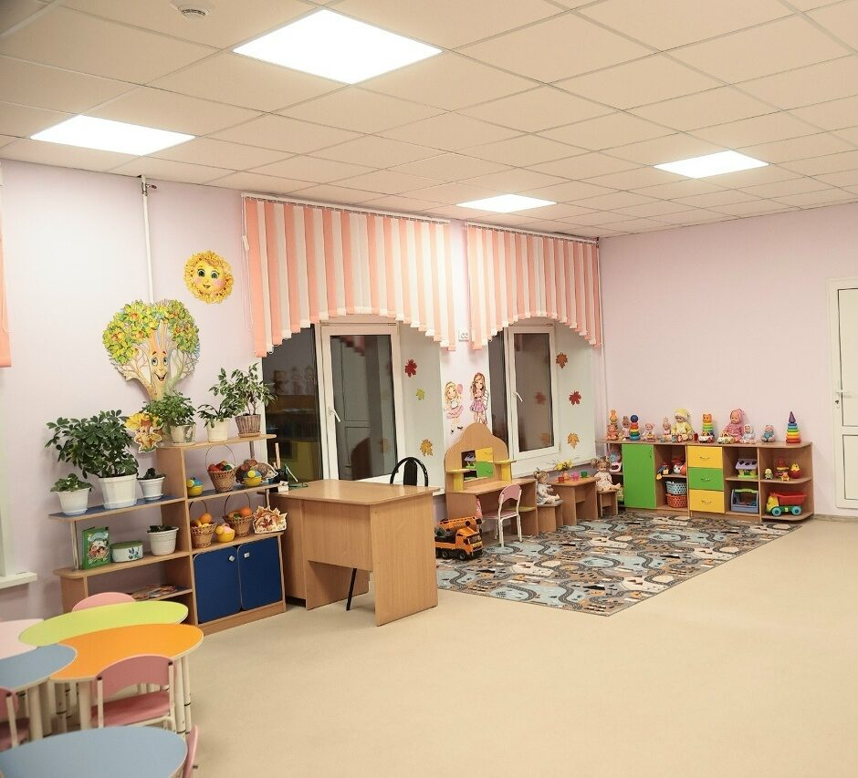
В барышском детском саду №3 «Алёнушка» завершили капитальный ремонт
Губернатор Алексей Русских осмотрел дошкольное образовательное учреждение во время рабочей поездки в район 18 сентября.…
НовостьПо данным источника
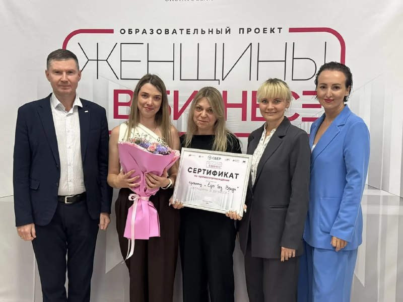

Губернатор Алексей Русских осмотрел дошкольное образовательное учреждение во время рабочей поездки в район 18 сентября.…


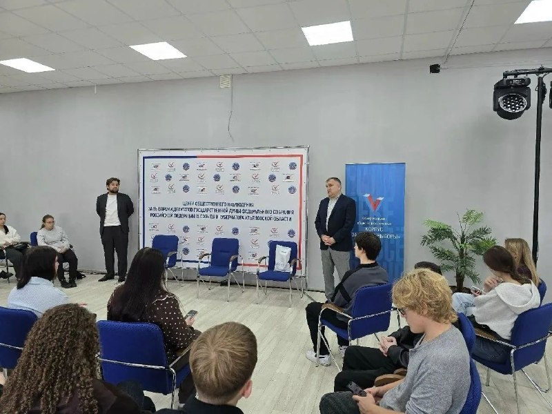
Избирательные участки открыты до 20:00.…

Из них 1 835 касались мест проживания иностранцев, ещё 700 — мест их работы. К административной ответственности привлекли 2 304 человека.…

18 сентября под руководством губернатора Алексея Русских состоялось заседание Инвестиционного комитета.…


Дети идут по этой дороге в школу, горожане - на рынок.…
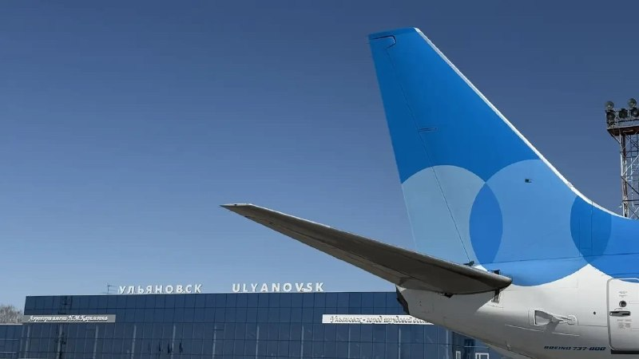

По планам специалистов, сегодня и в воскресенье асфальтирование продолжится — проезжую часть полностью закатают верхним слоем, после чего многострадальный участок улицы Карла Маркса откроют для движения транспорта.…

На участках многолюдно: семьи с детьми, молодежь, которая голосует впервые, и неизменно активные долгожители ✏ ️Написать нам 📲 Подписаться на…

Это произошло вчера около 19 часов, сообщает «ЧП Ульяновск». 🤬 — это опасно! ❤️ — пусть катаются……

Вместе с новым ФГОС также пересмотрят программы по математике, физике, химии и биологии, сделав упор на практические задачи Потянут или еще добавить?
В аэропорту Ульяновска (Баратаевка) в 10:55 возобновлен прием и отправка рейсов, сообщили в Росавиации.…
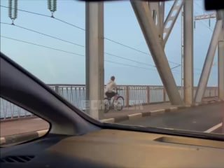

Как доложила начальник управления образования Светлана Куликова, на базе общеобразовательных организаций и центров детского творчества для 1 892 подростков в возрасте 14 лет и старше организовали 72 лагеря труда и отдыха.…

Самыми заметными в списке стали знаковые «Достопримечательное место «Ярмарочный квартал» (Ульяновск, ул.…


Перевернута горка и куча мусора вокруг», — сообщила наша подписчица. О других городских проблемах пишите нам в предложку в Телеграм или в MAX .…
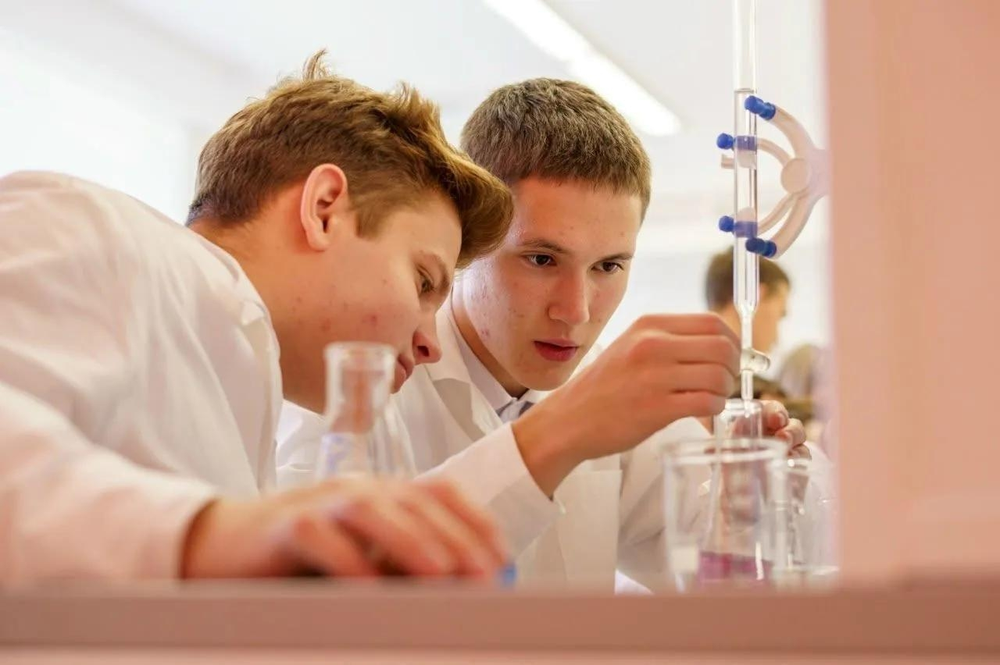
Возможность обучения в профильном предпрофессиональном классе появилась у димитровградских старшеклассников с нового учебного года.…

Наша команда возглавила медальный зачёт — как по общему числу наград, так и по золоту!…
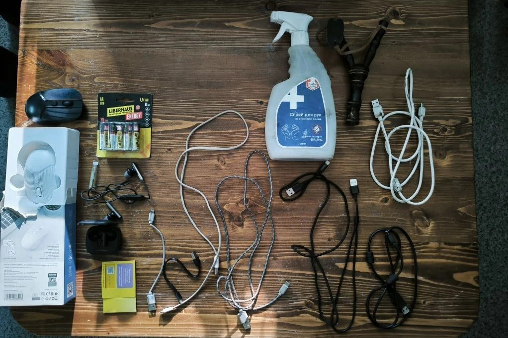
При досмотре грузового автомобиля, въезжавшего на территорию исправительного учреждения, были обнаружены и изъяты запрещенные предметы: 8…
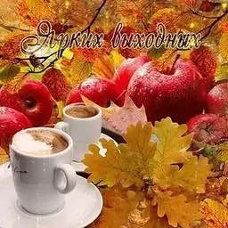
В эти выходные мы выбираем будущее нашей страны!
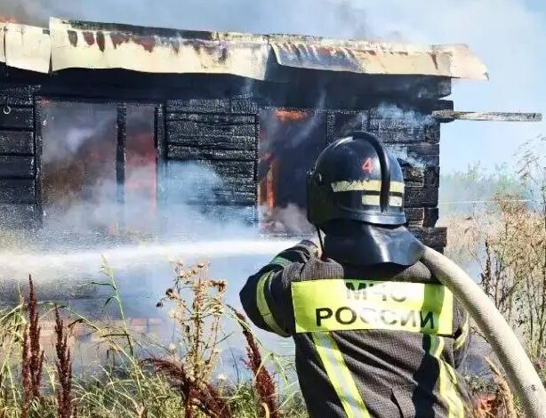
В управлении МЧС России по Ульяновской области подвели итоги минувших суток.…

Частичная приостановка ГВС произойдет в Засвияжье, Ленинском районе, 3-м и 4-м микрорайонах, а также в Новом городе.
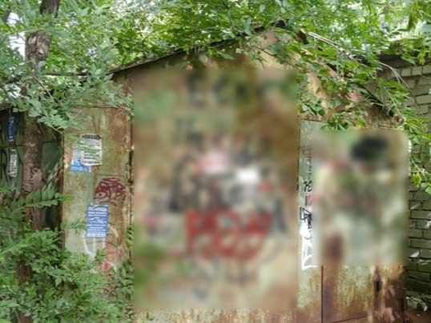
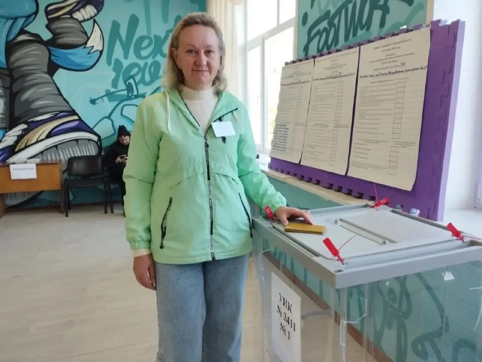
«Сегодня я пришла на выборы не только как избиратель, но и как человек, который каждый день видит, чем живёт наш дом и какие вопросы волнуют его жителей.…

Для детей и взрослых используются отечественные препараты — «Совигрипп», «Ультрикс Квадри» и «Флю-М». Кому особенно рекомендуется прививка?…

Теперь законопроект планируют внести в Госдуму. Надо?…

— Уборочная кампания в регионе выходит на финишную прямую.…
Ничего по этому фильтру в ленте нет — показать все материалы.
Возник 13.09, пик 13.09 — сюжет держали 4 источника. Полная дуга — в недельнике.